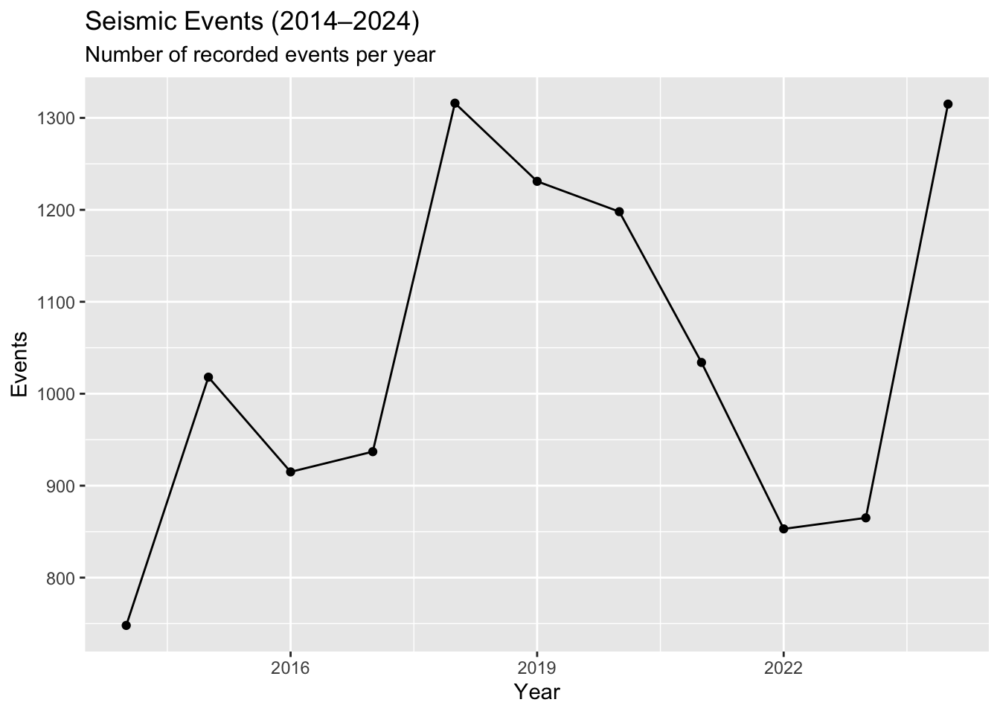
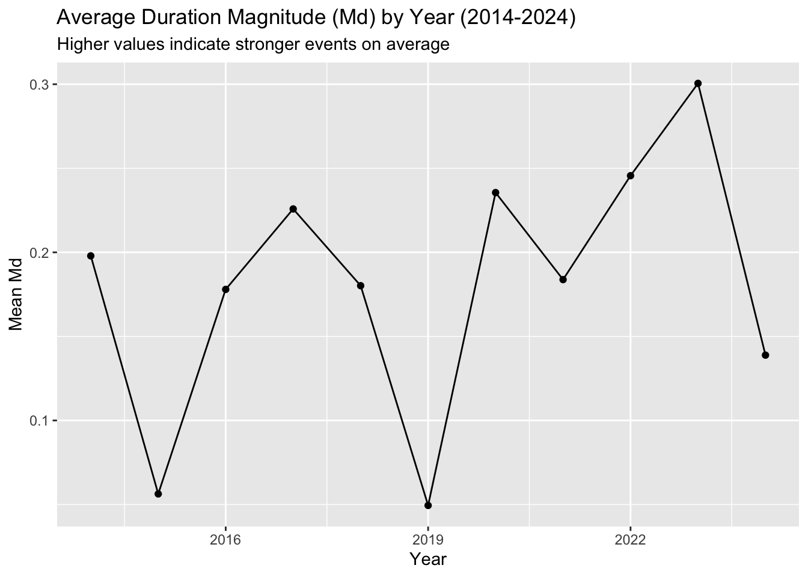
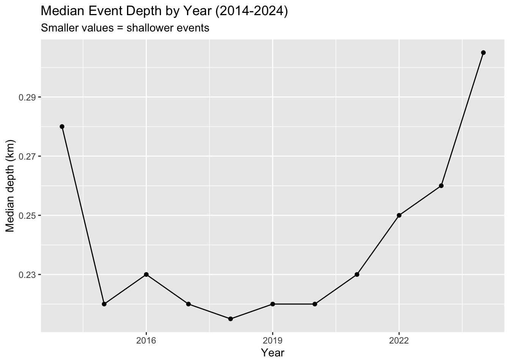
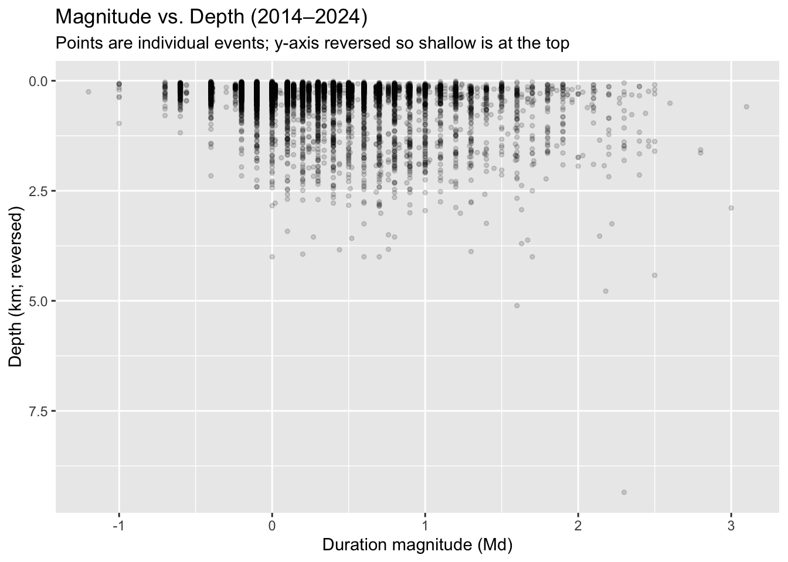

Explore the week’s TidyTuesday challenge. Develop a research question, then answer it through a short data story with effective visualization(s). Provide sufficient background for readers to grasp your narrative.
Background
Mount Vesuvius is one of the most dangerous volcanoes in the world because of its history and its location near Naples, Italy, where millions of people live. While its last eruption was in 1944, the volcano has not been quiet. Scientists continuously monitor seismic activity to look for early warning signs of unrest. Each event is measured by its magnitude, which reflects how strong it was, and its depth, which shows how close it was to the surface. Understanding how the number and severity of these events has shifted over time is key for assessing risk.
Research Question
How has the number and severity of seismic events changed over the last decade (2014-2024)?
Findings
Code
# Loading Datalibrary(tidytuesdayR)library(tidyverse)library(lubridate)tuesdata <- tidytuesdayR::tt_load('2025-05-13')vesuvius <- tuesdata$vesuvius# Cleaning and Filtering to 2014-2024vesu <- vesuvius %>%mutate(time =ymd_hms(time, quiet =TRUE),year =year(time) ) %>%filter(year >=2014, year <=2024)
The number of seismic events recorded each year varied greatly across the decade. Activity peaked in 2018 and again in 2024, both exceeding 1,300 events, while the lowest point occurred in 2014 with fewer than 750 events. This suggests alternating period of heightened and reduced seismic activity.
Code
ggplot(yearly, aes(year, n_events)) +geom_line() +geom_point() +labs(title ="Seismic Events (2014–2024)",subtitle ="Number of recorded events per year",x ="Year", y ="Events" )

Severity Via Magnitude
Average magnitudes remained low overall, ranging mostly between 0.1 and 0.3 Md. While no long-term trend is visible, there were fluctuations, with stronger averages in 2017, 2020, 2022, and 2023 compared to weaker years like 2015 and 2019. This indicates that event intensity is variable from year to year but does not show steady growth or decline.
Code
ggplot(yearly, aes(year, mean_md)) +geom_line() +geom_point() +labs(title ="Average Duration Magnitude (Md) by Year (2014-2024)",subtitle ="Higher values indicate stronger events on average",x ="Year", y ="Mean Md" )

Severity Via Depth
Seismic events at Vesuvius were consistently shallow, but their depth shifted over time. Between 2014 and 2018, events trended slightly shallower, while from 2019 to 2024, they grew deeper, culminating in the greatest depth in 2024. This pattern shows a gradual movement of seismic activity to deeper levels in recent years.
Code
ggplot(yearly, aes(year, median_depth_km)) +geom_line() +geom_point() +labs(title ="Median Event Depth by Year (2014-2024)",subtitle ="Smaller values = shallower events",x ="Year", y ="Median depth (km)" )

Relationship Between Magnitude and Depth
Most seismic events occurred at depths shallower than 1 km and with magnitudes clustered between 0 and 1 Md. A few stronger events reached magnitudes near 3 Md, while negative magnitudes captured very small micro seismic activity. Overall, the majority of events were both weak and shallow, with only a small proportion being larger or deeper.
Code
vesu_scatter <- vesu %>%filter(!is.na(duration_magnitude_md), !is.na(depth_km))ggplot(vesu_scatter, aes(x = duration_magnitude_md, y = depth_km)) +geom_point(alpha =0.15, size =1) +scale_y_reverse() +labs(title ="Magnitude vs. Depth (2014–2024)",subtitle ="Points are individual events; y-axis reversed so shallow is at the top",x ="Duration magnitude (Md)",y ="Depth (km; reversed)" )

Conclusion
Between 2014 and 2024, seismic activity at Vesuvius has been marked by fluctuations in frequency, intensity, and depth. While the number of events spiked in 2018 and 2024, the average magnitudes remained low overall, suggesting that most earthquakes were relatively weak. Depth patterns show that events have become deeper in more recent years, though they are still generally shallow. Taken together, these results highlight that seismic activity at Vesuvius is persistent but typically characterized by small, shallow earthquakes, with only occasional stronger or deeper events.
Source Code
---title: "Homework 01"---## TidyTuesday SectionExplore the week's [TidyTuesday](https://github.com/rfordatascience/tidytuesday) challenge.Develop a research question, then answer it through a short data story with [effective visualization(s)]({{<?>}}).Provide sufficient background for readers to grasp your narrative.## Background> Mount Vesuvius is one of the most dangerous volcanoes in the world because of its history and its location near Naples, Italy, where millions of people live.> While its last eruption was in 1944, the volcano has not been quiet.> Scientists continuously monitor seismic activity to look for early warning signs of unrest.> Each event is measured by its magnitude, which reflects how strong it was, and its depth, which shows how close it was to the surface.> Understanding how the number and severity of these events has shifted over time is key for assessing risk.## Research Question> How has the number and severity of seismic events changed over the last decade (2014-2024)?## Findings```{r}# Loading Datalibrary(tidytuesdayR)library(tidyverse)library(lubridate)tuesdata <- tidytuesdayR::tt_load('2025-05-13')vesuvius <- tuesdata$vesuvius# Cleaning and Filtering to 2014-2024vesu <- vesuvius %>%mutate(time =ymd_hms(time, quiet =TRUE),year =year(time) ) %>%filter(year >=2014, year <=2024)```### Yearly Summaries```{r}yearly <- vesu %>%group_by(year) %>%summarise(n_events =n(),mean_md =mean(duration_magnitude_md, na.rm =TRUE),median_md =median(duration_magnitude_md, na.rm =TRUE),pct_strong_md2 =mean(duration_magnitude_md >=2, na.rm =TRUE) *100,median_depth_km=median(depth_km, na.rm =TRUE),pct_shallow2km =mean(depth_km <=2, na.rm =TRUE) *100 ) %>%ungroup()print(yearly)```### Frequency: Events Per Year> The number of seismic events recorded each year varied greatly across the decade.> Activity peaked in 2018 and again in 2024, both exceeding 1,300 events, while the lowest point occurred in 2014 with fewer than 750 events.> This suggests alternating period of heightened and reduced seismic activity.```{r}ggplot(yearly, aes(year, n_events)) +geom_line() +geom_point() +labs(title ="Seismic Events (2014–2024)",subtitle ="Number of recorded events per year",x ="Year", y ="Events" )```### Severity Via Magnitude> Average magnitudes remained low overall, ranging mostly between 0.1 and 0.3 Md.> While no long-term trend is visible, there were fluctuations, with stronger averages in 2017, 2020, 2022, and 2023 compared to weaker years like 2015 and 2019.> This indicates that event intensity is variable from year to year but does not show steady growth or decline.```{r}ggplot(yearly, aes(year, mean_md)) +geom_line() +geom_point() +labs(title ="Average Duration Magnitude (Md) by Year (2014-2024)",subtitle ="Higher values indicate stronger events on average",x ="Year", y ="Mean Md" )```### Severity Via Depth> Seismic events at Vesuvius were consistently shallow, but their depth shifted over time.> Between 2014 and 2018, events trended slightly shallower, while from 2019 to 2024, they grew deeper, culminating in the greatest depth in 2024.> This pattern shows a gradual movement of seismic activity to deeper levels in recent years.```{r}ggplot(yearly, aes(year, median_depth_km)) +geom_line() +geom_point() +labs(title ="Median Event Depth by Year (2014-2024)",subtitle ="Smaller values = shallower events",x ="Year", y ="Median depth (km)" )```### Relationship Between Magnitude and Depth> Most seismic events occurred at depths shallower than 1 km and with magnitudes clustered between 0 and 1 Md.> A few stronger events reached magnitudes near 3 Md, while negative magnitudes captured very small micro seismic activity.> Overall, the majority of events were both weak and shallow, with only a small proportion being larger or deeper.```{r}vesu_scatter <- vesu %>%filter(!is.na(duration_magnitude_md), !is.na(depth_km))ggplot(vesu_scatter, aes(x = duration_magnitude_md, y = depth_km)) +geom_point(alpha =0.15, size =1) +scale_y_reverse() +labs(title ="Magnitude vs. Depth (2014–2024)",subtitle ="Points are individual events; y-axis reversed so shallow is at the top",x ="Duration magnitude (Md)",y ="Depth (km; reversed)" )```## Conclusion> Between 2014 and 2024, seismic activity at Vesuvius has been marked by fluctuations in frequency, intensity, and depth.> While the number of events spiked in 2018 and 2024, the average magnitudes remained low overall, suggesting that most earthquakes were relatively weak.> Depth patterns show that events have become deeper in more recent years, though they are still generally shallow.> Taken together, these results highlight that seismic activity at Vesuvius is persistent but typically characterized by small, shallow earthquakes, with only occasional stronger or deeper events.